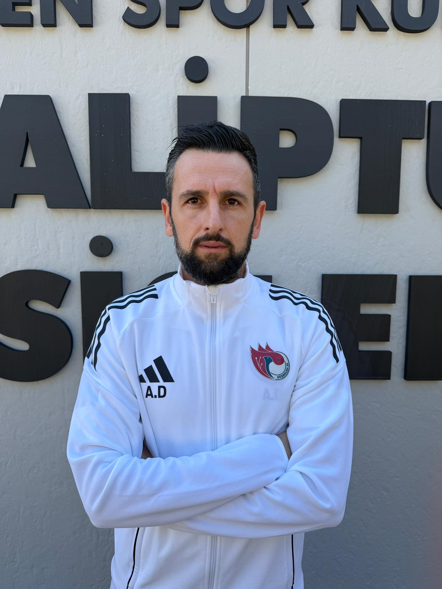
Gençlik Gelişim Direktörü / U-11 / U-12 Teknik Sorumlusu
Arda Dindar
Alt yapı koordinatörü; U-11 ve U-12 yaş gruplarının teknik gelişimini, antrenman planlarını ve maç organizasyonlarını yöneten sorumludur.
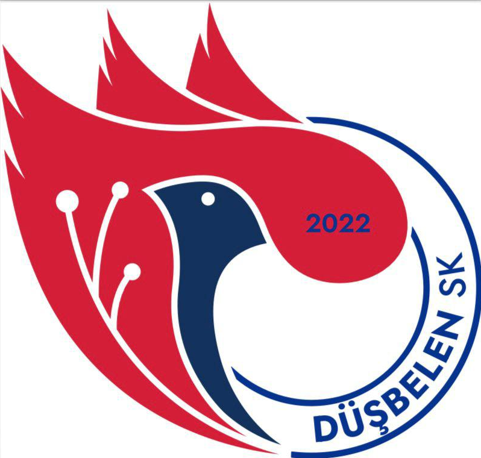
Mahallenin yüreğinden doğan Düşbelen SK, sahada mücadeleyi, tribünde ise aile olmayı temsil eder.
Düşbelen SK, genç yetenekleri keşfetmek, mahalle kültürünü yaşatmak ve sporu çocukların hayatının merkezine taşımak amacıyla kurulmuş bir futbol kulübüdür.
Alt yapılardan A takıma uzanan yapısıyla; disiplin, takım ruhu ve fair-play ilkelerini ön planda tutar. Antrenman programlarımız, lisanslı antrenörler eşliğinde bilimsel yöntemlerle planlanır.
"Bizim için her çocuk; önce iyi bir insan, sonra iyi bir sporcu olmayı öğrenir. Düşbelen SK, bu yolculuğun başlangıç noktasıdır."
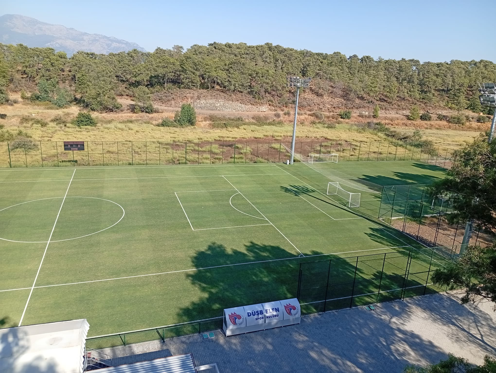
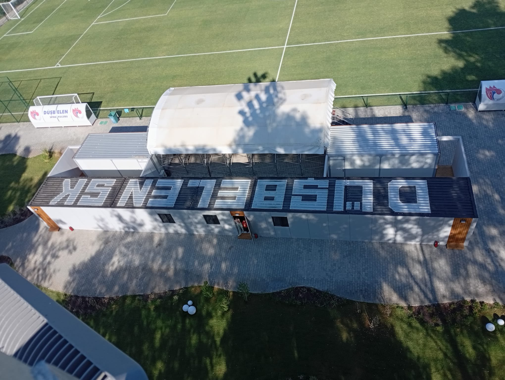
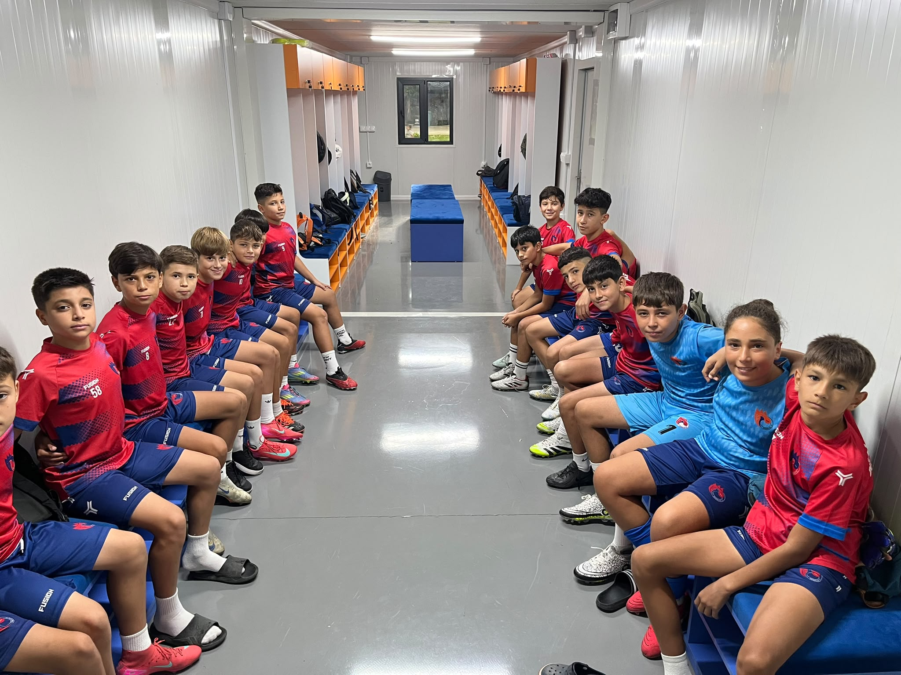
"Düşbelen SK'da her bir çocuğumuzun sahada ve hayatta güçlü durması için çalışıyoruz. Disiplin, karakter, saygı ve mücadele bizim için futbolun önüne geçen değerlerdir. Bu kulüp, sadece futbol oynanan bir yer değil; bir ailedir."
Düşbelen SK'nın arkasındaki ekip; disiplini, düzeni ve gelişimi planlayan isimler.

Arda Dindar
Alt yapı koordinatörü; U-11 ve U-12 yaş gruplarının teknik gelişimini, antrenman planlarını ve maç organizasyonlarını yöneten sorumludur.
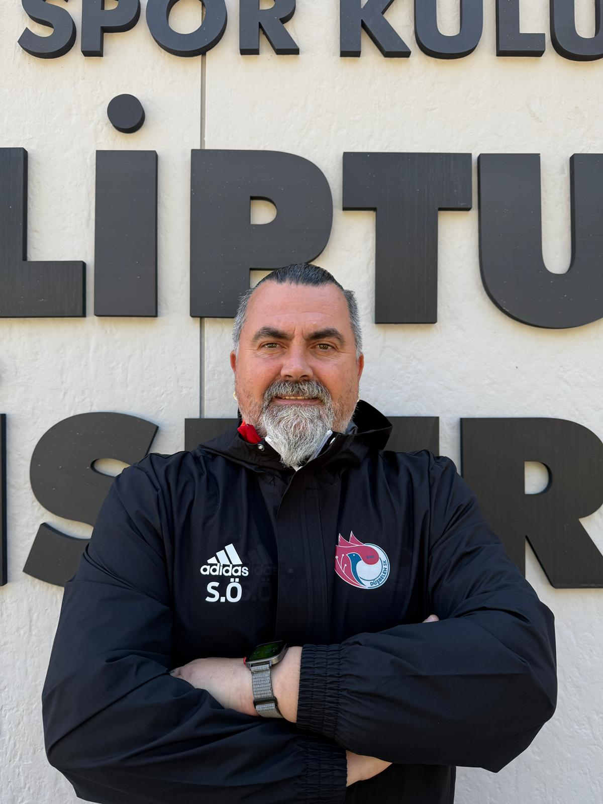
Selim Özkan
U-13 ve U-14 yaş gruplarında temel futbol eğitimi, oyun disiplini ve bireysel gelişim süreçlerini planlar ve uygular.
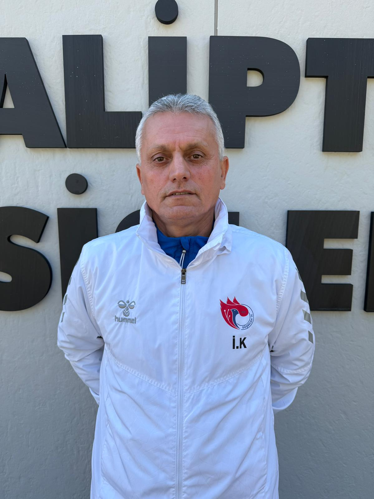
İsmail Kaya
Kalecilerin teknik çalışmaları, refleks gelişimi ve maç performanslarını planlar ve takip eder.
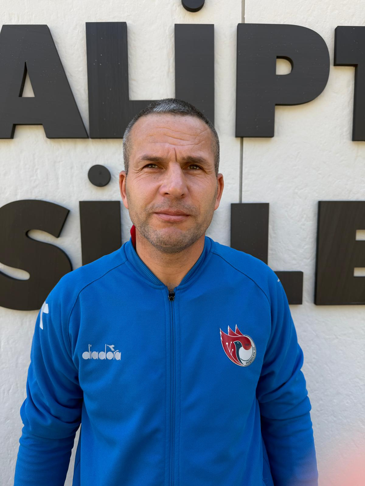
Gökhan Karabıyık
Saha içindeki düzen, ekipman ve maç günü hazırlıklarının görünmeyen mimarıdır.
Altyapıdan A takıma uzanan yapımızda; her sezon daha fazla çocuğa spor sevgisini aşılamayı hedefliyoruz.
Düşbelen SK, sahada kazanmaktan önce doğru karakteri kazanmayı hedefler.
Düşbelen SK'da "kazanan takım" olmanın yolu; skordan önce doğru duruşa sahip oyuncular yetiştirmekten geçer. Antrenmanlardan maç gününe kadar, her adımda bu dört temel değeri merkeze alırız.
Aile ortamı, disiplin ve saygı üzerine kurulu bu yapı; çocuklarımızın hem sahada hem de hayatta güçlü bireyler olarak büyümesini hedefler.
Skor tabelası ne olursa olsun; son düdüğe kadar pes etmeyen, rakibe saygılı ama oyuna asla teslim olmayan bir anlayışla sahadayız.
Her oyuncu, yanında oynayan arkadaşının da sorumluluğunu taşır. Birlikte savunur, birlikte hücum eder, hep beraber seviniriz.
Hakeme, rakibe ve tribüne duyulan saygı; kulübümüzün kırmızı çizgisidir. Oyunun ruhuna ve kurallarına sadık kalmak, bizim için önceliktir.
Her antrenman, her maç; oyuncularımız için bir öğrenme alanıdır. Hatalardan ders çıkaran, kendini sürekli geliştiren bir yapı hedefleriz.
Maçlardan, antrenmanlardan ve kulüp atmosferinden kareler.
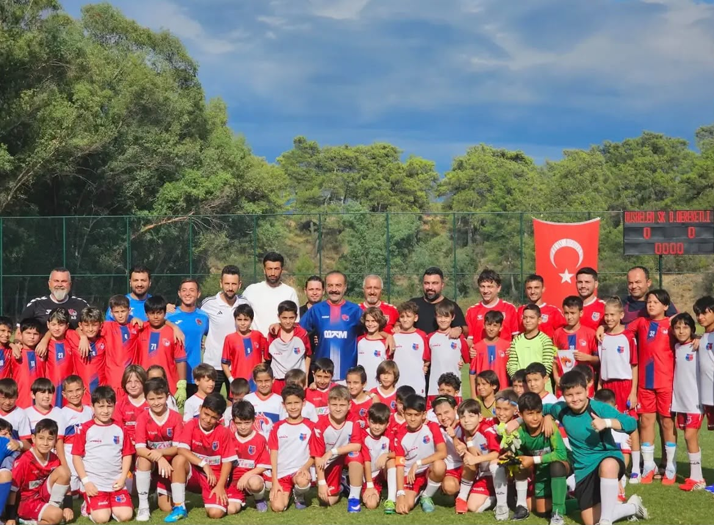
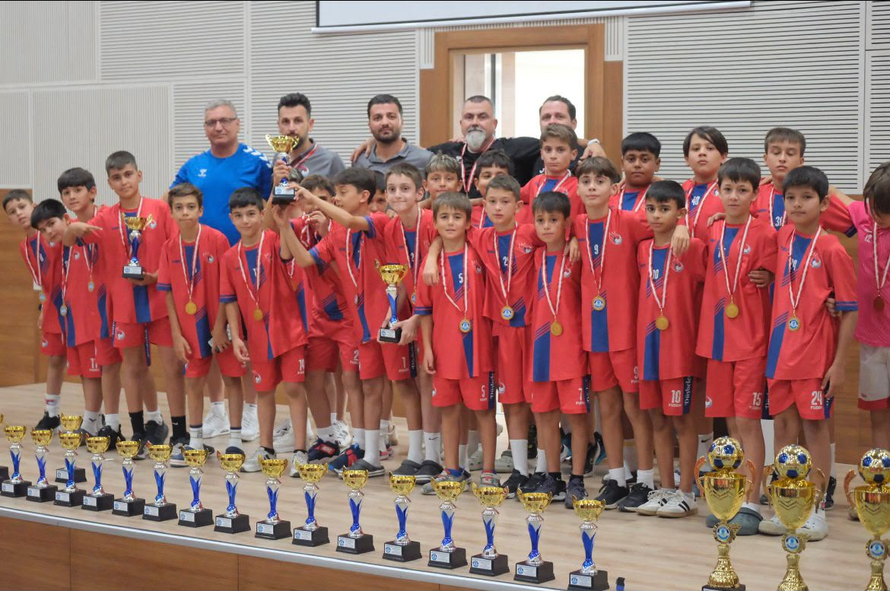
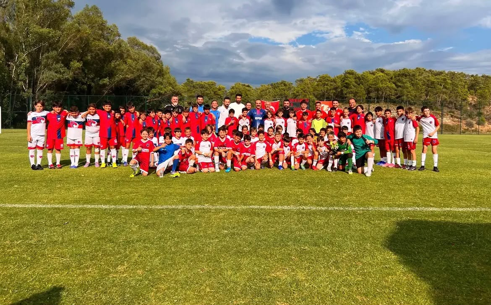
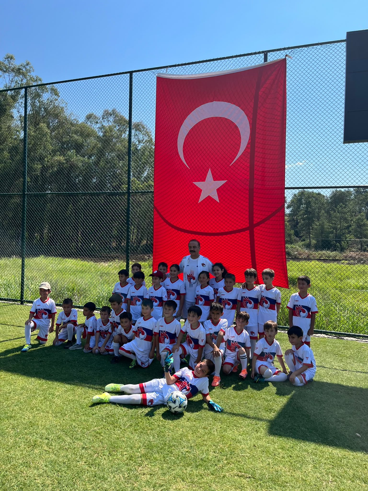
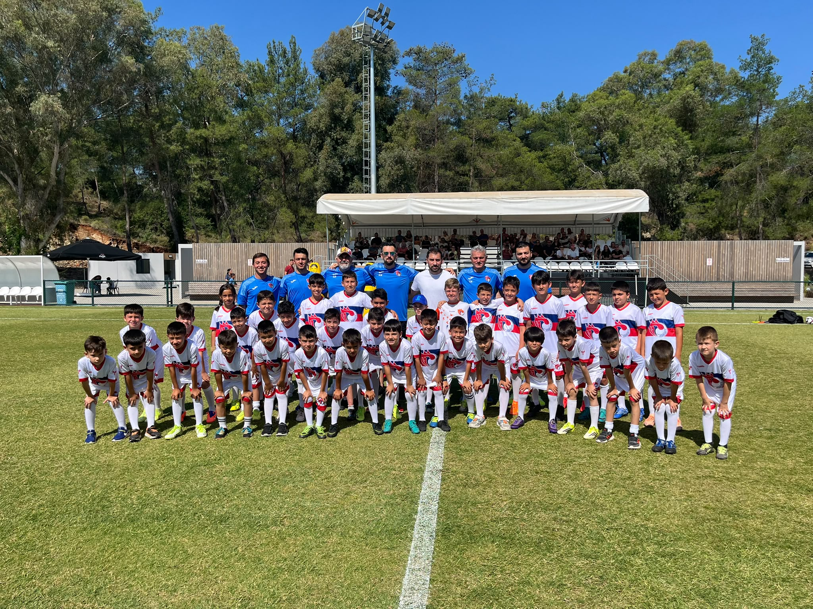
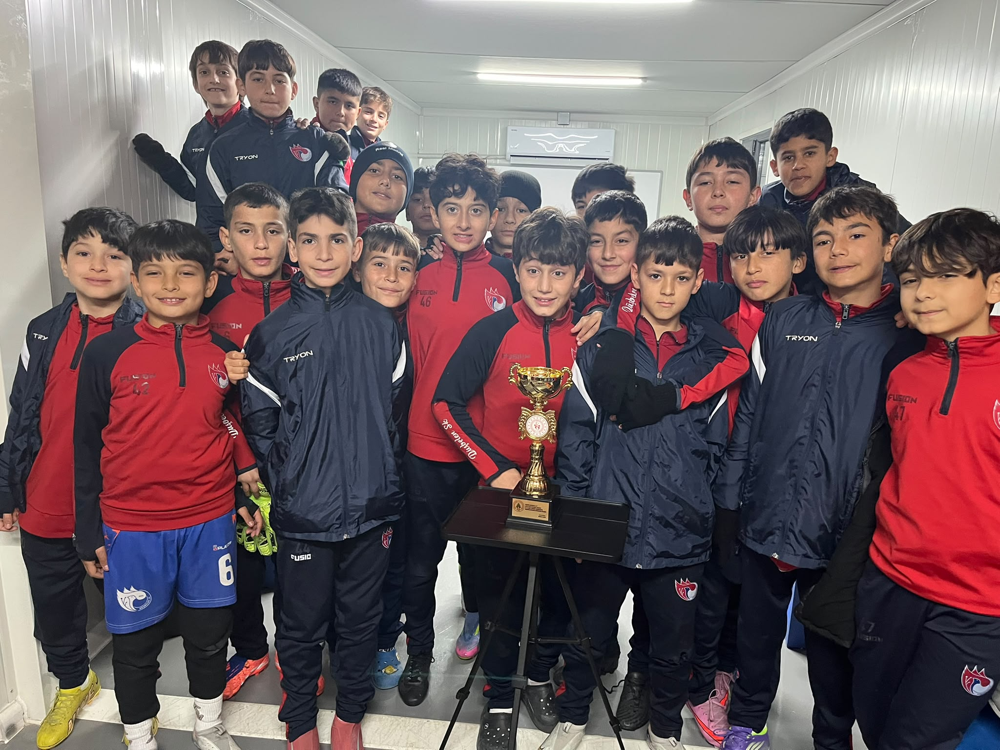
Sahamızdan drone görüntüleri, maç anları ve kulüp atmosferi.
Çocuklarımızın güvenliği ve gelişimi için tüm süreci şeffaf ve planlı yürütüyoruz.
Düşbelen SK'da her oyuncu, sahada olduğu kadar saha dışında da takip edilir. Antrenman programları, maç katılımları ve akademik hayat ile uyumlu bir planlama yapılmaya özen gösterilir.
Velilerimizle düzenli iletişim kurarak; performans gelişimi, sağlık durumu ve takım içi davranışları hakkında bilgilendirme yapılır.
Yaş gruplarına göre planlanan antrenman günleri ve saatleri sezon başında belirlenir ve gerektiğinde SMS / WhatsApp grupları üzerinden güncellenir.
Oyuncu lisansı, sağlık raporu ve gerekli tüm resmi evraklarla ilgili kulüp yönetimi velilere rehberlik eder ve süreci birlikte yürütür.
Velilerimiz, teknik kadro ile belirli saatlerde birebir görüşme talep edebilir; oyuncunun gelişimi ve ihtiyaçları hakkında geri bildirim alabilir.
Teknik ekibin son maç için sahaya sürdüğü muhtemel 11.
| Pozisyon | Oyuncu | Forma No |
|---|---|---|
| Kaleci | Oyuncu Adı | 1 |
| Sağ Bek | Oyuncu Adı | 2 |
| Stoper | Oyuncu Adı | 4 |
| Stoper | Oyuncu Adı | 5 |
| Sol Bek | Oyuncu Adı | 3 |
| Orta Saha | Oyuncu Adı | 6 |
| Orta Saha | Oyuncu Adı | 8 |
| 10 Numara | Oyuncu Adı | 10 |
| Sağ Kanat | Oyuncu Adı | 7 |
| Sol Kanat | Oyuncu Adı | 11 |
| Santrafor | Oyuncu Adı | 9 |
Saha dizilişi örnektir, maçtan maça güncellenebilir.
Düşbelen SK'nın kurumsal yapısını oluşturan yönetim ve denetleme kurulları.
Kulübün sportif ve idari vizyonunu belirleyen, sürdürülebilir yapıyı yöneten kurul.
Kulüp faaliyetlerinin mali ve idari denetimini şeffaflıkla yürüten kurul.
Sosyal Medyadan
Instagram hesabımızdan kulüp kadrosu ve yönetiminden tanıtım kareleri.